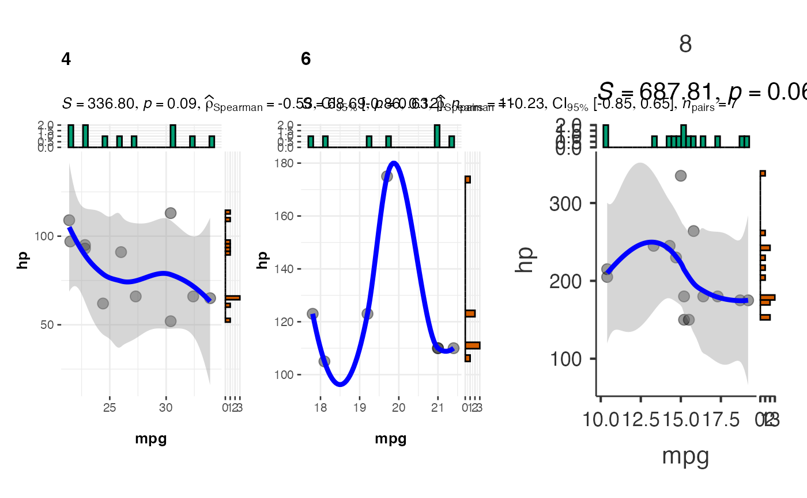
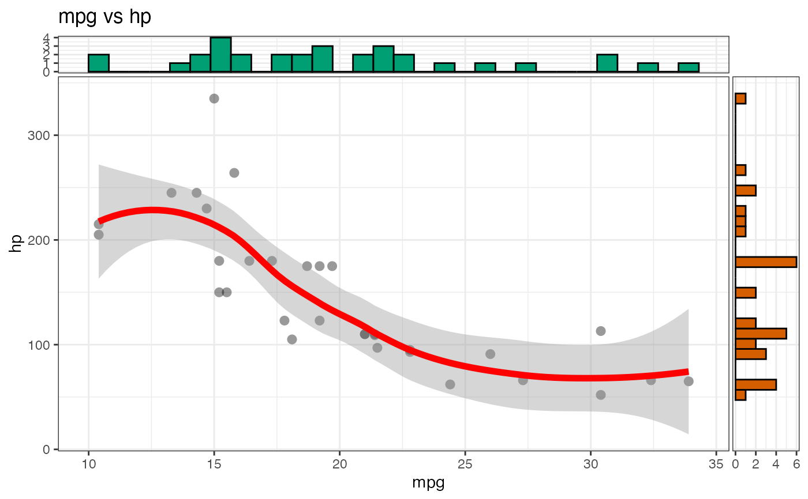
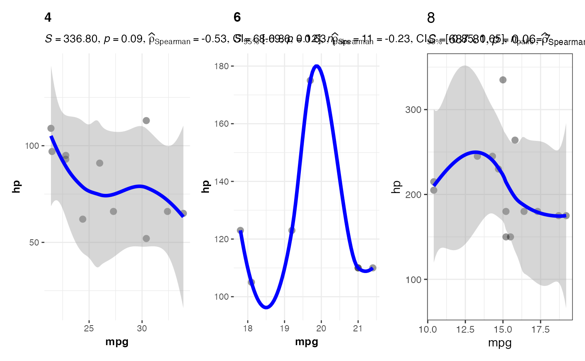
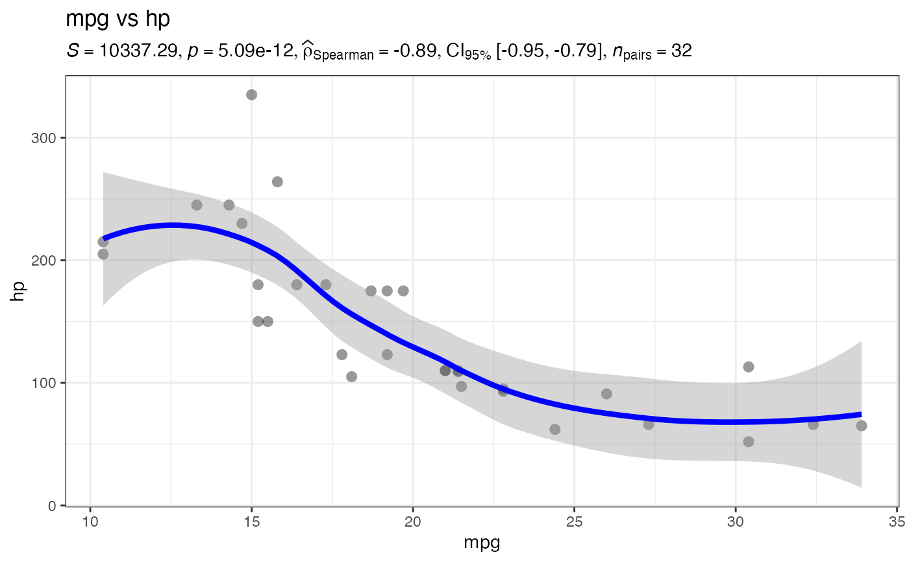

Wrapper Function for ggstatsplot::ggscatterstats and ggstatsplot::grouped_ggscatterstats to generate scatter plots with correlation analysis and optional marginal distributions.
Usage
jjscatterstats(
data,
dep,
group,
grvar = NULL,
colorvar = NULL,
sizevar = NULL,
shapevar = NULL,
alphavar = NULL,
labelvar = NULL,
showRugPlot = FALSE,
marginalType = "none",
smoothMethod = "lm",
typestatistics = "parametric",
mytitle = "",
xtitle = "",
ytitle = "",
originaltheme = FALSE,
resultssubtitle = FALSE,
conflevel = 0.95,
bfmessage = FALSE,
k = 2,
marginal = FALSE,
xsidefill = "#009E73",
ysidefill = "#D55E00",
pointsize = 3,
pointalpha = 0.4,
smoothlinesize = 1.5,
smoothlinecolor = "blue",
plotwidth = 600,
plotheight = 450,
addGGPubrPlot = FALSE,
ggpubrPalette = "jco",
ggpubrAddCorr = FALSE,
ggpubrCorrMethod = "pearson",
ggpubrAddSmooth = FALSE,
showExplanations = FALSE,
clinicalPreset = "custom"
)Arguments
- data
The data as a data frame.
- dep
First continuous variable for correlation analysis (e.g., biomarker levels, age, tumor size). This will appear on the horizontal axis. Use numeric variables like lab values, measurements, or scores.
- group
Second continuous variable for correlation analysis (e.g., expression levels, treatment response, survival time). This will appear on the vertical axis. Use numeric variables that you want to correlate with the x-axis variable.
- grvar
Optional categorical variable to create separate correlation plots for each group (e.g., by treatment group, tumor stage, or gender). Creates multiple panels for comparison.
- colorvar
Optional variable to map point colors. When specified, switches to enhanced scatter plot with full ggplot2 aesthetic control instead of ggstatsplot correlation analysis.
- sizevar
Optional continuous variable to map point sizes. When specified, switches to enhanced scatter plot with full ggplot2 aesthetic control instead of ggstatsplot correlation analysis.
- shapevar
Optional categorical variable to map point shapes. When specified, switches to enhanced scatter plot. Works best with variables having 6 or fewer levels.
- alphavar
Optional continuous variable to map point transparency (alpha). When specified, switches to enhanced scatter plot.
- labelvar
Optional variable to label points. Uses ggrepel to avoid overlapping labels.
- showRugPlot
Add rug plot along axes to show data distribution.
- marginalType
Add marginal distribution plots using ggExtra package.
- smoothMethod
Method for smooth trend line in enhanced scatter plot.
- typestatistics
Choose based on your data distribution. Pearson assumes normality (common for lab values after transformation). Spearman works for any monotonic relationship (tumor grades, symptom scores). Robust methods handle outlying patients. Bayesian analysis quantifies evidence strength for clinical decision-making.
- mytitle
.
- xtitle
.
- ytitle
.
- originaltheme
.
- resultssubtitle
.
- conflevel
Confidence level for confidence intervals (between 0 and 1).
- bfmessage
Whether to display Bayes Factor in the subtitle when using Bayesian analysis.
- k
Number of decimal places for displaying statistics in the subtitle.
- marginal
Whether to display marginal histogram plots on the axes using ggside.
- xsidefill
Fill color for x-axis marginal histogram.
- ysidefill
Fill color for y-axis marginal histogram.
- pointsize
Size of the scatter plot points.
- pointalpha
Transparency level for scatter plot points.
- smoothlinesize
Width of the regression/smooth line.
- smoothlinecolor
Color of the regression/smooth line.
- plotwidth
Width of the plot in pixels. Default is 600.
- plotheight
Height of the plot in pixels. Default is 450.
- addGGPubrPlot
Add publication-ready scatter plot using ggpubr package.
- ggpubrPalette
Color palette for ggpubr scatter plot.
- ggpubrAddCorr
Add correlation statistics to ggpubr scatter plot.
- ggpubrCorrMethod
Method for correlation in ggpubr plot.
- ggpubrAddSmooth
Add smoothed trend line to ggpubr scatter plot.
- showExplanations
Show explanations of the statistical results
- clinicalPreset
Clinical analysis preset
Value
A results object containing:
results$todo | a html | ||||
results$presetInfo | a html | ||||
results$explanations | a html | ||||
results$plot2 | an image | ||||
results$plot | an image | ||||
results$plot3 | an image | ||||
results$ggpubrPlot | an image | ||||
results$ggpubrPlot2 | an image |
Examples
# \donttest{
# Load test data
data("mtcars")
# Basic scatter plot with correlation
jjscatterstats(
data = mtcars,
dep = "mpg", # x-axis
group = "hp", # y-axis
typestatistics = "parametric",
conflevel = 0.95,
k = 2
)
#>
#> SCATTER PLOT
#>
#> You have selected to use a scatter plot with correlation analysis.

# Scatter plot with marginal histograms
jjscatterstats(
data = mtcars,
dep = "mpg",
group = "hp",
marginal = TRUE,
xsidefill = "#009E73",
ysidefill = "#D55E00",
pointsize = 4,
pointalpha = 0.6,
smoothlinesize = 2,
smoothlinecolor = "red"
)
#>
#> SCATTER PLOT
#>
#> You have selected to use a scatter plot with correlation analysis.

# Grouped scatter plot by number of cylinders
jjscatterstats(
data = mtcars,
dep = "mpg",
group = "hp",
grvar = "cyl",
typestatistics = "nonparametric",
bfmessage = FALSE,
resultssubtitle = TRUE
)
#>
#> SCATTER PLOT
#>
#> You have selected to use a scatter plot with correlation analysis.


# }